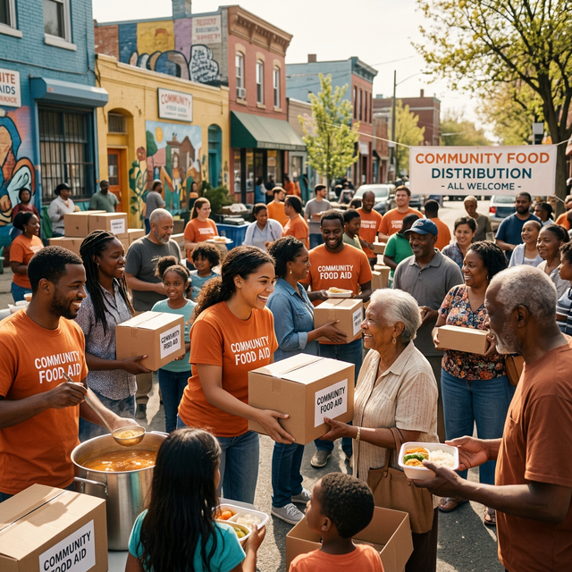

Food Drive
Food Drive
Food Drive at Hyderabad Tech Park
Collected 800 kg of surplus food from 12 tech companies in HITEC City — 2,400 meals distributed across 6 communities.
Read More → Distribution
Distribution
2,000 Meals Distributed in Gachibowli
Served 2,000 hot meals to daily wage workers and families near Gachibowli. Deployed 45 volunteers for this drive.
Read More → Food Rescue
Food Rescue
Wedding Surplus Food Rescued
Rescued 500+ kg from a Jubilee Hills wedding. Repacked and distributed within 3 hours to 4 shelters.
Read More → Kitchen Event
Kitchen Event
Community Kitchen Event – Secunderabad
Cooked and served 1,200 fresh meals from our new Secunderabad kitchen to shelters and street families.
Read More → CSR Drive
CSR Drive
TechMahindra CSR Food Drive
Partnered with TechMahindra's CSR team for a mega food drive. 200 employees volunteered; 5,000 meals served.
Read More → School Program
School Program
School Nutrition Program – Nampally
Launched mid-day meal supplement program for 3 government schools. 800 children receive daily nutritious snacks.
Read More → Relief Drive
Relief Drive
Flood Relief – Food Distribution
Emergency response to floods in Warangal district. Distributed 15,000 meals over 10 days to 5,000 displaced families.
Read More →
Community
Slum Community Feeding Drive
6-month feeding program in Basti cluster near Secunderabad — 200 families received consistent daily meals.
Read More →
Festive Drive
Ramadan Iftar Drive – 3,000 Meals
Organized community Iftar for 3,000 people across Old City with support from 80 restaurant partners.
Read More →


March 2026 – Impact Report
Meals: 18,400 | Volunteers: 340 | Cities: 18 | New Partners: 12
February 2026 – Impact Report
Meals: 16,200 | Volunteers: 310 | Cities: 17 | Events: 28
January 2026 – Impact Report
Meals: 14,800 | Volunteers: 290 | Cities: 16 | Kg Rescued: 4,200
Q4 2025 – Quarterly Summary
Meals: 52,000 | Volunteers: 850 | Cities: 15 | Partners: 280
Annual Report 2025
Full year impact: 1,10,000 meals | 45+ events | 12 cities covered